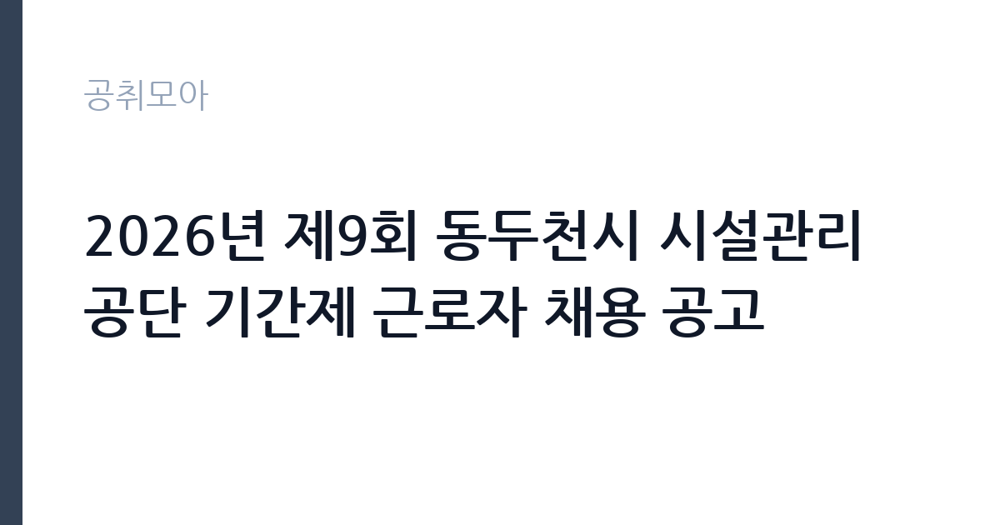

[공공기관] 2026년 제9회 동두천시 시설관리공단 기간제 근로자 채용 공고
동두천시시설관리공단 · 경기 · 마감 2026-10-14 (D-5) · 출처 나라일터

한눈에 보는 모집 조건
| 기관 | 동두천시시설관리공단 |
|---|---|
| 공고명 | 2026년 제9회 동두천시 시설관리공단 기간제 근로자 채용 공고 |
| 고용형태 | 기간제 |
| 근무지 | 경기 |
| 게시일 | 2026-10-09 |
| 마감일 | 2026-10-14 (D-5) |
지원자격, 이렇게 읽으세요
- 기간제 4명
- 접수 ~2026-10-14 마감
- 세부 조건은 원문 공고문 확인
공고문의 응시자격은 원문 붙임에서 확인해야 합니다. 공단 기간제 채용은 통상 만 18세 이상과 공무원임용 결격사유 비해당이 기본이며, 분야별 우대조건이 붙습니다. 카페운영 분야는 바리스타 자격증이나 카페 근무 경력이, 테라피운영 분야는 관련 자격증과 실무 경력이, 림스파 청소 분야는 시설미화 경력이 우대될 가능성이 높습니다. 중복 지원 불가(택 1) 방식이 유력하니, 본인 경력과 가장 맞는 분야 하나를 골라 원문의 자격요건과 대조하는 것이 출발점입니다.
이 공고의 포인트
이 공고의 관전 포인트는 두 가지입니다. 첫째, 직전 회차(제8회)가 재공고까지 갔는데 이번 제9회로 이어진다는 점입니다. 재공고가 반복되는 분야는 경쟁률이 낮을 수 있어 첫 지원에서도 기회가 있습니다. 둘째, 분야가 나뉘어 있다는 점입니다. 카페운영 2명, 테라피운영 1명, 자연휴양림 림스파 청소(여성) 1명으로 성격이 다르니, 본인 경력에 맞는 분야를 고르면 서류 적합도가 올라갑니다. 단, 접수기간이 사흘뿐이고 방문접수만 가능해 동두천 방문이 필수입니다.
전형은 어떻게 진행되나
전형은 1차 서류전형과 2차 면접시험으로 진행됩니다. 접수기간은 2026년 10월 12일부터 10월 14일까지이며, 동두천어울림센터 5층 공단 사무실(경영기획팀)로 방문접수만 받습니다. 점심시간(11시 30분부터 오후 1시)과 주말·공휴일에는 제출이 불가할 수 있으니 출발 전에 문의처(070-4226-4792)로 접수시간을 확인하십시오. 직전 회차 기준으로 면접은 접수 마감 직후에 치러지니, 서류 제출과 동시에 면접 답변도 준비하시기 바랍니다.
원문에서 확인한 전형 방식
1. 채용인원: 총 4명 2. 근무부서 및 분야 가.소요관광센터 - 카페운영 2명 - 테라피운영 1명 나. 관광운영팀(자연휴양림) - 림스파 청소(여성) 1명 3. 시험방법: (1차) 서류전형, (2차) 면접시험 4. 접수방법: 방문접수 (동두천시 시설관리공단 사무실) - 경기도 동두천시 중앙로 268, 동두천어울림센터 5층 동두천시 시설관리공단 사무실(경영기획팀) 5. 접수기간: 2026. 10. 12.(월)~2026. 10. 14.(수) (※ 11:30~13:00, 주말 및 공휴일 제출불가) 6. 문의처: 070-4226-4792 ※자세한 사항은 첨부파일 확인바랍니다
이런 분께 추천해요
- 바리스타·테라피 자격증이나 서비스직 경력이 있는 분 — 분야 적합성이 서류의 핵심입니다
- 10월 12일부터 14일 사이에 동두천 방문접수가 가능한 분 — 우편·인터넷 접수는 없습니다
- 단기 공공일자리를 찾는 동두천·양주·의정부 거주자 — 통근 거리가 근무 지속의 조건입니다
지원 전 체크리스트
- 지원 분야를 하나만 골랐는가 — 중복 지원 시 불이익이 있을 수 있으니 택 1로 접수하십시오
- 방문접수 가능 시간대를 확인했는가 — 점심시간과 주말에는 제출이 불가할 수 있습니다
- 분야별 우대 자격증 사본을 준비했는가 — 바리스타·테라피 자격이 서류를 가릅니다
- 문의처(070-4226-4792)로 제출서류 목록을 확인했는가 — 직전 회차와 서류가 같다는 보장이 없습니다
모집 일정과 제출 타이밍
이번 공고의 접수기간은 2026년 10월 12일부터 10월 14일까지 단 사흘입니다. 권장 스케줄은 이렇습니다. 10월 11일까지 원문 공고문과 제출서류를 모두 준비하고 지원 분야를 확정하고, 12일 접수 시작일에 방문해 접수한 뒤, 13일에 접수 확인 전화를 마치십시오. 서류전형 합격자 발표는 접수 마감 직후가 유력하며, 면접은 10월 중순에 치러질 가능성이 높습니다. 발표일은 공단 홈페이지와 나라일터에서 직접 확인하시기 바랍니다.
직무 이해하기: 공공기관
이번 채용의 근무지는 두 곳입니다. 소요관광센터에서는 카페운영(음료 제조와 매장 응대) 2명과 테라피운영(테라피 프로그램 진행) 1명을, 관광운영팀(자연휴양림)에서는 림스파 청소 1명을 맡습니다. 소요관광센터는 소요산 일대 관광 거점으로 카페와 체험시설을 운영하는 곳이며, 자연휴양림 림스파는 산림욕장 부대시설입니다. 기간제 근로계약이라 계약기간과 주당 근무시간, 휴일 조건을 원문에서 반드시 확인하십시오. 관광시설 특성상 주말 근무가 포함될 수 있습니다.
자기소개서 작성 팁
공단 기간제 지원서의 핵심은 분야 적합성입니다. 첫 문단에는 네 분야 중 해당 분야를 택한 이유를 한 줄로 선언하십시오. 카페 분야라면 일일 제조 잔 수와 사용 장비, 테라피 분야라면시술 경력과 가능 프로그램, 청소 분야라면 담당 면적과 시설 종류를 숫자와 함께 구체적으로 서술하십시오. 숫자가 들어간 서술이 좋습니다. 마무리는 입사 후 시설 이용객 만족에 기여하겠다는 각오로 닫으십시오. 동두천 거주자는 지역 연고를 덧붙이면 좋습니다.
면접 준비 포인트
공단 기간제 면접은 실무와 인성 질문이 중심입니다. 카페 분야는 피크시간 응대와 위생관리, 테라피 분야는 고객 응대와 안전관리, 청소 분야는 시설관리 요령을 설명할 수 있게 연습하십시오. 면접관이 주말 근무 가능 여부를 물으면 명확히 답하는 것이 좋습니다. 복장은 단정하게, 질문에는 결론부터 말하는 것이 기본입니다. 동두천시시설관리공단이 운영하는 시설이 어디인지 한 줄로 말할 수 있게 준비하고 가십시오.
급여·근무조건 읽는 법
급여는 원문 공고문의 보수 조건에서 확인하시기 바랍니다. 공단 기간제 근로자의 보수는 통상 시급제 또는 월급제로 정해지며, 주휴수당과 4대 보험 적용 여부는 계약조건에 따라 달라집니다. 직전 회차(제8회) 공고에도 별도 연봉 테이블이 본문에 공개되지 않았으니, 이번 공고의 보수와 계약기간, 근무시간은 원문 붙임에서 직접 확인하십시오. 수치 추정은 하지 않습니다.
자주 묻는 질문
- 네 분야 중 어디에 지원해야 하나요?
카페운영 2명, 테라피운영 1명, 자연휴양림 림스파 청소 1명으로 나뉩니다. 중복 지원은 불가한 방식이 유력하니 본인 자격증과 경력에 가장 맞는 분야 하나를 골라 접수하십시오. - 직전 회차와 무엇이 다른가요?
제8회는 소요관광센터 5명(카페 4명, 테라피 1명) 모집에 재공고까지 진행됐고, 이번 제9회는 4명(카페 2명, 테라피 1명, 림스파 청소 1명) 모집입니다. 분야 구성과 인원이 바뀌었으니 전회차 기준이 아닌 이번 공고문으로 확인하십시오. - 접수는 어떻게 하나요?
2026년 10월 12일부터 10월 14일까지 동두천어울림센터 5층 공단 사무실로 방문접수만 받습니다. 우편·인터넷 접수는 없으며, 점심시간과 주말에는 제출이 불가할 수 있으니 문의처(070-4226-4792)로 미리 확인하시기 바랍니다.
함께 보면 좋은 공고
[공공기관] [설악산] 설악산국립공원 기간제 직원[탐방해설] 채용 추가접수 공고 — 마감 2026-10-16[공공기관] 2026년 4분기 1차 KDI 청년인턴 채용 공고(장애인 제한경쟁) — 마감 2026-10-22[공공기관] 2026년 4분기 1차 KDI 청년인턴 채용 공고 — 마감 2026-10-22출처: 나라일터 공개정보를 바탕으로 공취모아가 정리한 안내글입니다. 모집 조건·일정은 변경될 수 있으니 지원 전 반드시 원문 공고문을 확인하세요. 본 글은 정보 제공용이며 합격을 보장하지 않습니다.